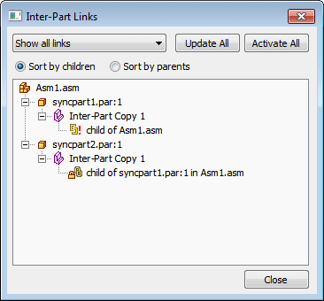
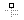
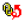
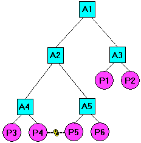
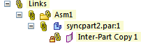

Managing Inter-Part links
Viewing and managing Inter-Part links
You can use the Inter-Part Links dialog box to view and manage the inter-part links you create between the parts and assemblies for a design project. You display the Inter-Parts Links dialog box using the Inter-Part Manager command on the Tools tab.

|
Legend |
|
|---|---|
 |
Part |
 |
Assembly |
|
Inter-part copy |
|
|
Variable |
|
|
Reference plane |
|
 |
Sketch or Profile |
 |
Feature Extent |
|
Link is intact |
|
|
Link status cannot be determined because parent is inactive |
|
|
Parent is not found |
|
|
Link to parent is broken |
|
 |
Link has multiple solutions |
|
Link is out-of-context with its container assembly |
The Inter-Part Links dialog box allows you to sort the inter-part links by parents or by children. When set to Children, each part or assembly that is a child in an inter-part relationship is displayed. Below each child is a description of the type of inter-part relationship and the name of the parent document. When set to Parents, each part or assembly that is a parent in an inter-part relationship is listed. Below each parent is the name of each of its children.
In the Inter-Part Links dialog box, special symbols are used to indicate the status of the associative links:
The link is intact and if design changes are made, the link should update properly.
The status of the link cannot be determined because the parent document is currently inactive. You can resolve this with the Activate All command on the shortcut menu to activate all the parts in the assembly with associative links.
Parent is not found. This can occur if, for example, you rename the parent file outside of Design Manager. This can be fixed by renaming the file back to its original name.
Link to parent is broken. This can occur if a feature that another part is dependent on is deleted. For example, a cutout feature in Part P1 is used to create an inter-part copy in Part P2. If you then delete the parent cutout feature in Part P1, a broken link symbol would be displayed adjacent to the inter-part copy listing for Part P2.
Link has multiple solutions. The current assembly relationship or inter-part link contains multiple solutions. To correct the problem, you can adjust the assembly relationships or use Inter-Part Manager to determine which links are affected and delete those links.
Linked document is out-of-context with its container assembly. When you create inter-part links between documents, the link information is contained in both the child and parent documents, based on the assembly you opened. When you open a child document out-of-context with its container assembly, this symbol is displayed. See the Understanding In-Context Container Assembly section for more details.
This symbol does not indicate a problem, only that inter-part links in the child document may not update properly if the parent document is modified outside the context of the container assembly. You can do one of the following:
-
Open the assembly listed in the Tooltip, then in-place activate the child document.
-
Ignore the symbol.
-
Break the link between the child document and parent document.
Understanding the In-Context Container Assembly
When you create the first Inter-Part link for a part, the link information is stored between the parts and highest-level assembly is referenced. Write access to the highest-level assemblies is not required. The in-context assembly is the highest-level assembly A1.

Links Collection
The links collection in PathFinder can be expanded to show the links in the current open document.

Right-clicking occurrences in PathFinder gives the following options:
-
Expand All
-
Collapse All
-
Activate All
Note:Activates parent document.
-
Update All
Note:Updates all open documents.
-
Freeze All
-
Unfreeze All
-
Break All
-
Inter-Part Manager
All links can be broken or frozen from the top level in the links collector, or individually by right-clicking on the expanded items in the collection.
Inter-Part Associativity and Inactive Parts
Before you make a design change to a part or assembly that is involved in an inter-part relationship, you should first use the Activate All command on the shortcut menu in the Inter-Part Links dialog box to activate the parts that contain Inter-Part relationships. The Activate All command only activates those parts that contain Inter-Parts links in the assembly.
Breaking Inter-Part Links
If you want to delete any associative links between a child element and its parent, you can select the child element in the Inter-Part Links dialog box, then use the Break Links command on the shortcut menu. For example, you may want to break the associative links to a part that used to be unique to the assembly, but now will be used in other unrelated assemblies.
When you break the associative links to a part, you can still make design changes to the individual parts, but you may need to add dimensions or edit the feature to redefine the inputs for the feature. For example, if you define the extent for a feature using a keypoint on another part, then break the link later, you can still edit the extent for the feature.
After you break the associative link, you can select the feature, then use the Edit Definition option to access the Extent Step for the feature, then type a dimension value on the command bar to define a new extent for the feature.
Earlier versions of Solid Edge created a new link each time a piece of inter-part geometry was referenced. If the same inter-part geometry is referenced more than once in the local document, a single link is used. If that link is broken, all the children that use that link are affected. Freezing a link with multiple features referenced freezes all the children of the parent feature.
When you define the extent for a feature associatively using a keypoint on another part, no driving dimension for the feature extent is created.
If you break the link and then edit the feature extent by typing an extent value, a driving dimension for the extent is created.